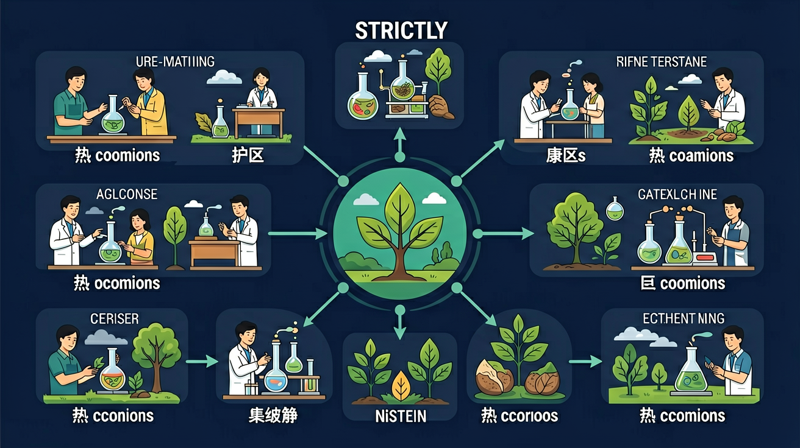

小学科学 G5 · 物质科学 · 热的传导·对流·辐射

❓ 为什么冬天摸金属比摸木头更凉？
❓ 保温杯是怎么阻止热量逃跑的？
❓ 太阳的热量是怎么穿过太空传到地球的？
学完这一课，这些问题你都能自信地回答。
下列哪种方式不需要介质？
炒菜时锅把烫手主要因为？
我们知道热会从高温物体传到低温物体，比如用热水袋取暖、金属勺放进热汤里会变热。
但热量是怎么"跑过去"的呢？为什么太阳的热量能穿越真空宇宙到达地球？水烧开时为什么会翻滚？
因此，今天我们来探究热的三种传递方式——传导、对流、辐射，理解保温的科学原理！
🎥 22秒 · 五场景：标题 → 热传导粒子振动 → 热对流循环 → 热辐射电磁波 → 对比总结
热量在固体（或紧密接触的物体之间）从高温处传向低温处。固体中的粒子相互碰撞，将能量从振动剧烈的高温粒子传递给振动较弱的低温粒子，直到两端温度相等。
液体或气体受热后密度变小，向上浮动；冷的液体/气体密度大，向下沉降，形成循环对流，将热量传遍整个空间。
热量以电磁波的形式向四面八方传播，不需要任何介质，在真空中也可以传播。辐射速度极快（光速），物体温度越高，辐射能力越强。
点击下方按钮切换传热模式，观察微观粒子如何传递热量 👇
导热性能好，热量传递速度快。
导热性能差，能阻止热量传递，常用于保温隔热。
羽绒之间充满了大量静止空气。空气是不良导体，静止的空气不产生对流，从而大大减少热传导和热对流，让体温不易散失。
内胆和外壳之间是真空层——真空中无介质，既不能传导也不能对流；内壁镀银膜可反射红外辐射，三种传热方式都被阻断，保温效果极佳。